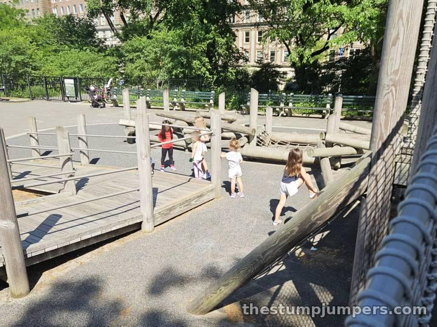
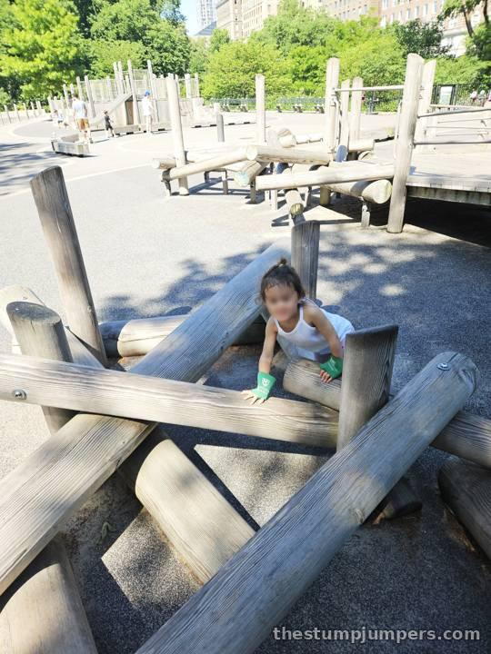

I'd seen this one out of the corner of my eye a hundred times while running the Central Park loop, so I finally had to check it out. First challenge: getting in. The entrance is very hard to find from the Fifth Avenue side, and we did a lap of the fence before we spotted it.

Once inside, there are some fun log obstacles to climb over, balance on, and generally conquer, plus a strange rope obstacle that I still can't fully explain. Kids figured it out immediately, as kids do. If yours is a climber, it's worth a stop.
Attached to the playground is a secluded, wooded picnic area. It's a lovely idea. Unfortunately, it seems to double as a bathroom, because there are no actual bathrooms nearby. Your nose will tell you which corners to avoid.
The parents are mostly Upper East Side locals who tend to keep to themselves, which makes for a calm, if not especially chatty, afternoon.
Verdict: just okay. A fine stop for climbers when you're already in the neighborhood, but not one to plan a day around.
On the run: that's how I found it, after running past it a hundred times on the Central Park loop. By bike: right off the loop drive near 96th Street. Finding the entrance is the hard part: it's on the Fifth Avenue side. By train: 6 to 96 St, or 4, 5, or 6 to 86 St, then walk west to Fifth Avenue and the East 96th Street park entrance.